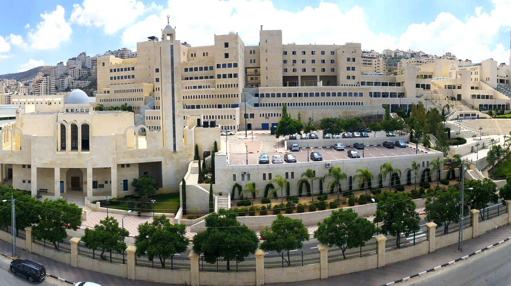

My name is Diana Ahmed, I am 23 years old from Palestine, a fresh graduate from An-Najah National University, I studied computer science and learned several programming languages, including Java and C++. I took a course in the basics of Dart and flutter . I am currently interested in the full-stack course because it is in great demand in the labor market, and this is the reason for my participation with you in the hope of getting the maximum benefit.
Nablus is a Palestinian city in the northern region of the West Bank, approximately 60 kilometers north of Jerusalem. Located in a strategic position between Mount Ebal and Mount Gerizim, Nablus is considered the largest commercial and cultural center in Palestine. Founded by the Roman Emperor, Vespasian in 72 CE as Flavia Neapolis, the city has been ruled by many empires over the course of its almost 2,000-year-long history. In 636 CE, Neapolis, along with most of Palestine, came under the rule of the Islamic Arab Caliphate of Umar Ibn al-Khattab; where its name was changed to the Arabic name of Nablus. In the heart of Nablus lies the old city consisting of eight major quarters: Yasmina, Qaryun, Aqaba, Qaysariyya, Habala, Faqous, Naser and Gharb. The old city is densely populated with 9000 inhabitants whereas Nablus district is populated with 389,328 inhabitants.
An-Najah National University is a public institution whose mission is to advance learning, share knowledge and foster the skills needed in young men and women to succeed as people and professionals in all spheres of life. An-Najah also aims to instill a love of understanding in the students and to promote a culture of scientific excellence. The University strives to equip its students with the skills necessary to be productive and creative members of the Palestinian society and to compete in the domestic, Arab and international work markets.
the study of computers and computing, including their theoretical and algorithmic foundations, hardware and software, and their uses for processing information. The discipline of computer science includes the study of algorithms and data structures, computer and network design, modeling data and information processes, and artificial intelligence. Computer science draws some of its foundations from mathematics and engineering and therefore incorporates techniques from areas such as queueing theory, probability and statistics, and electronic circuit design. Computer science also makes heavy use of hypothesis testing and experimentation during the conceptualization, design, measurement, and refinement of new algorithms, information structures, and computer architectures.
